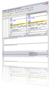

IPlanning
株式会社 アイプランニング
Towa Edogawabashi building 8F
Yamabuki-cho 347
Shinjuku-ku Tokyo
Phone: 03-5225-1147
開発効率を向上させるフリーソフトウェア
インターネット上に公開されているフリーウェア、オープンソースソフトウェアをうまく利用して、開発効率向上につなげます。
選定基準
・WindowsXPで動作すること
Vistaでは動作未確認です。
・機能がシンプルで、学習に時間を要しないこと
多機能なツールは魅力的ですが、
習得までに時間がかかりすぎれば、導入効果も小さくなります。
導入の容易さを考え、目的を絞ったツールを選定しています。
・ポピュラーな技術を使っていること
独自の文法やファイル形式を使っていると、そのツールに依存してしまい、乗り換えや連携が難しくなります。
なるべくJavascript, HTML,
正規表現
など、標準的な技術を使っているものを選びました。
・安定していること
ここに挙げたものは、自分でも使ってみています。
（少なくとも数時間、長いものは半年ほど）
用途別一覧
マインドマップ・TODOリスト効率化無料ツール集
開発計画を練るためのツールです。
・FreeMind（Java製マインドマップ）
・XMind（Java製マインドマップ）
・Frieve
・Editor（アイデアマップ）
・gljakal's ToDo（TODOノート）
テキスト編集効率化無料ツール集

無駄なタイピングや確認作業を減らし、効率的な編集を行います。
・TextSorter（テキスト並び替え）
・Charu3（クリップボードツール）
・WinMerge（比較ツール）
・VxEditor（エディタ）
・jEdit（エディタ）
ドキュメント作成効率化無料ツール集
アイプランニング技術情報
このページでは、アイプランニング社員が調査したこと、学んでいることが具体的にどんなものなのかを披露してきます。
プログラム初心者の方向けの情報から、超マニアックな分野の情報まで随時提供していきますのでお楽しみ下さい。
技術情報TOPページ
技術情報TOPページ
プログラマ募集中・・・
■第一は「人物重視」
お客さまの立場に立ってモノが作れる判断力、企画力、コンサルティング能力を磨きたくはありませんか？プログラム能力は、プロジェクトを通じて自然と能力があがるようなシステムになっています。初心者プログラマであっても３年程度で、その能力は初心者だったとは思えないくらいのスキルとなっています。
これは、「最初は誰でも初心者だ」という教育方針があるため、また、多くの社員が入社して初めてプログラミングにふれたという経験があるために自分のつまづき体験や、成功体験を含めた教育がなされているからなのです。
このようにアイプランニングでは、社員１人ひとりの個性と人間性を重視し、スキルにあったマンツーマン教育であなたを一人前のエンジニアへと成長させていきます。 それは誠実なスタッフが集まっているからこそ、どんなお客様からも信頼される企業に成長できるから。私たちはそう考えています。
お客さまの立場に立ってモノが作れる判断力、企画力、コンサルティング能力を磨きたくはありませんか？プログラム能力は、プロジェクトを通じて自然と能力があがるようなシステムになっています。初心者プログラマであっても３年程度で、その能力は初心者だったとは思えないくらいのスキルとなっています。
これは、「最初は誰でも初心者だ」という教育方針があるため、また、多くの社員が入社して初めてプログラミングにふれたという経験があるために自分のつまづき体験や、成功体験を含めた教育がなされているからなのです。
このようにアイプランニングでは、社員１人ひとりの個性と人間性を重視し、スキルにあったマンツーマン教育であなたを一人前のエンジニアへと成長させていきます。 それは誠実なスタッフが集まっているからこそ、どんなお客様からも信頼される企業に成長できるから。私たちはそう考えています。
■応募者へのメッセージ
プログラマを目指して会社に入ったものの、思った通りの仕事をさせてもらえなかったと思っている人、教育システムが十分でなかったためにスキルが身に付いていないと思っている人も気軽にご応募ください。パソコンのスキルに自信のない方でも、マンツーマンの研修制度で一人前に成長できるフィールドを整えておりますので安心してご応募くださいね。
知識だけでなく本当の開発力が身につく環境でのシステム開発でみつかる『やりがい』はもちろん、プライベートでも今までになかった充実感が得られますよ。
プログラマを目指して会社に入ったものの、思った通りの仕事をさせてもらえなかったと思っている人、教育システムが十分でなかったためにスキルが身に付いていないと思っている人も気軽にご応募ください。パソコンのスキルに自信のない方でも、マンツーマンの研修制度で一人前に成長できるフィールドを整えておりますので安心してご応募くださいね。
知識だけでなく本当の開発力が身につく環境でのシステム開発でみつかる『やりがい』はもちろん、プライベートでも今までになかった充実感が得られますよ。